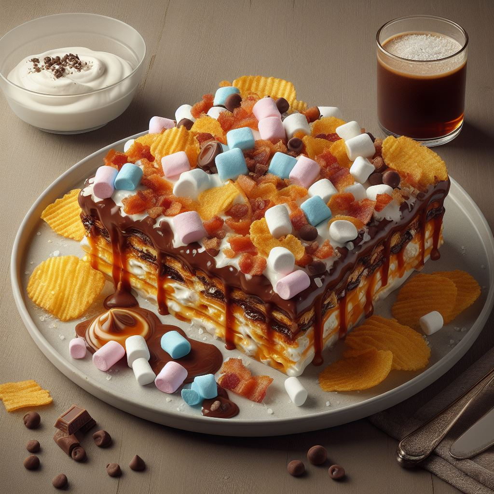

Chocolate Chip Lasagna

Description:
Gooey lasagna that is sweet, savory, and everything in-between! Just like no one you know used to make!
You will at least be full, right?
Ingredients:
- 9 - Lasagna noodles
- 2 cups - Chocolate sauce
- 1 cup - Cottage cheese
- 1 cup - Mini marshmallows
- 1/2 cup - Chocolate chips
- 1/4 cup - Bacon bits
- 1/4 cup - Potato chips
- 1/4 cup - Caramel sauce
- 1/4 tsp - Sea salt
Steps:
- Preheat oven to 375°F and lightly grease a 9x13 inch baking dish.
- Cook the lasagna noodles according to the package directions, then drain and rinse with cold water.
- In a small bowl, stir together the cottage cheese and sea salt.
- In a medium microwave-safe bowl, heat the chocolate sauce for about 30 seconds, or until warm and smooth.
- To assemble the lasagna, spread about 1/4 cup of the chocolate sauce over the bottom of the prepared baking dish. Arrange 3 noodles over the sauce, slightly overlapping. Spoon half of the cottage cheese mixture over the noodles, spreading evenly. Sprinkle half of the mini marshmallows and chocolate chips over the cheese layer. Drizzle about 2 tablespoons of caramel sauce over the top.
- Repeat with another layer of noodles, chocolate sauce, cottage cheese, marshmallows, chocolate chips, and caramel sauce.
- Top with the remaining noodles and chocolate sauce, making sure to cover the noodles completely.
- Sprinkle the bacon bits and potato chips over the top of the lasagna.
- Bake for 25 minutes, or until bubbly and golden.
- Let the lasagna rest for 10 minutes before cutting into squares and serving.
Enjoy your chocolate-bacon lasagna! 😋